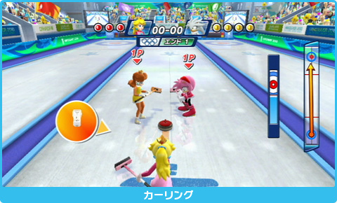
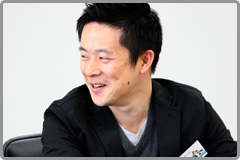
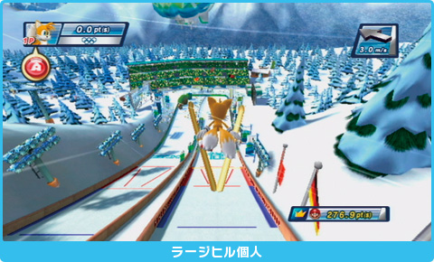
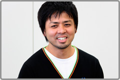

――
皆さんの感じる冬季オリンピック競技の楽しさ・面白さはどんなところでしょうか？ そしてゲームにどのように生かされましたか？
飯塚：
開発当初、私は冬季競技はあまり詳しくなかったんですが、勉強してみると非常に競技のバリエーションが豊かだなと感じました。特にカーリングとか、「チーム青森」が盛り上がったおかげで日本でもメジャー競技のひとつになりましたけれども、見ている以上にやると面白いんです。カーリングはバンクーバーで私と大橋とで実際に体験してきたんですが、そのあたりはゲームの中にもうまく組み込めたんじゃないかなと思います。やってみてはじめて面白さがわかるみたいな競技がたくさんあるんですよね。
――
Wii版のカーリングではどんなところに注力されましたか？
飯塚：
カーリングは４人でやるスポーツで、投げる人だけがうまくてもダメで、本当にみんなで力を合わせた結果で勝負が決まるんですね。ストーンを投げる方向を決め、投げて、こすってと実際のスポーツのように担当を分けることで、家族みんなで「やったね！」と楽しめるような形にしました。
野中：
カーリングは廣瀬が相当ハマッってましたね。
渡辺：
社内でも廣瀬さんまたカーリングやってるみたいな感じで（笑）。
廣瀬：
今までこんなに面白い競技だとは知りませんでした（笑）。
大橋：
実際にプレイしてみると、戦略を立てるのがかなり楽しいスポーツだと思います。

――
冬季競技一般に言える特徴はありますか？
佐藤祐：
スノーボードやスピードスケートなど、冬季の競技ってスピード感があるもの、夏季の競技にはない風を感じるようなものが多いですね。
大橋：
アルペンの滑降とかリュージュとか、ボブスレーなんかもそうですけど、日常では感じることができないようなスピードが出るんですよね。とても実際に自分で試すことができないような競技もありますし。そういうところもゲームの中では楽しめるよう、うまく表現できたんではないかなと思います。
――
自分でやる機会があまりない競技が多いということで、先ほどのカーリング以外にも実際に見たりやってみたりということはされたんでしょうか？

中村：
去年の春ごろに開発チームが編成されまして、冬季競技をあまり知らないので実際に見に行こうということになったんです。山の上でスキークロスの大会をやっているらしいからと見に行ったら、雪がないのでやってませんみたいなこともあり、とりあえずスキーウェアはない状態で靴とスキー板だけレンタルして、こけられない状態で滑ってみたりはしました。ゲームの開発に役立ったかはわからないんですが（笑）。
大橋：
仕事で行ってるんだから、そこは役立ったと言ってもらわないと立つ瀬がないんだけど（苦笑）。
中村：
スキージャンプのジャンプ台の高いところから飛ぶ感じとかは、実際にその場所に行ってみることが大いに参考になりましたので大丈夫です（笑）。
飯塚：
本当に見た目以上にすごい高さがあって、上から見ると垂直かと思うくらいの角度で…。
中村：
これはやるのは無理だなと。

大橋：
スキージャンプの人に言わせると、滑降の方が信じられないそうですけどね。板を履いただけの生身の状態で120キロくらい、バイクに乗ってるようなスピードなんですよね。逆に、滑降の人はスキージャンプは無理って言うらしいですけど。
中村：
ちなみに、フィールドはバンクーバーの実際のオリンピックで使われるものと同じものにしようと作りました。
大橋：
基本的にはバンクーバーの取材でコースやスタジアムの写真を撮って、CAD(※設計図のようなもの)のデータなどもいただきまして。それを3Dモデルに起こし直して、ゲームに合うようにアレンジを加えるという作り方をしていました。
飯塚：
中には建設中だったり完成した写真もない状態だったので、CADのデータでもないと作れなかったんです（笑）。
大橋：
本当にその場には基礎しかなくて、看板にイメージ図があって、それを写真に撮って持って帰ったというのもあります。
――
ある意味では、まだ存在しないコースを事前にシミュレートして楽しめてしまうわけですね。
中村：
スピードスケートの会場も実際の会場と同じ寸法で制作したんですが、マリオを置くとなんだかコースが実際より小さく見えたんですよ。キャラクターの大きさがこのくらいだから、縮尺的に長さはこのくらいのはずだと何回も調べたんですけど、やっぱりマリオは実在の人間とは頭身が違うので…（一同・笑）。
星野：
コースは本物に即して正確に作っています。いろんな体型のキャラクターが出てくることで最終的には成立したということですね。
――
DS版のスタッフの皆さんも、現地には行かれたんですか？
笠原：
私は取材でバンクーバーに行っていないんですが、長野オリンピックの跡地には行きました。スキージャンプのジャンプ台の上に立ったり、ボブスレーのコースの中を歩いて写真を撮ったりして、こんな狭いところをあんなスピードで走るのかと思いましたね。

古久保：
私はバンクーバーに行きまして、アルペン大回転や滑降のコースを上から下まで滑り、ところどころポイントをしぼってビデオカメラを回して周囲に何があるかを収めたり、デジタルカメラにGPS機器を取り付けることで撮影した場所と標高などのデータも記録させ、図面上の等高線と合わせてコースを正確に作りました。DS版でそこまで必要なのかという部分もあったんですが、まあWii版のデータ取りも兼ねて（笑）。
――
実際のコースを滑るだけでも結構大変なんじゃないですか？
古久保：
３人で滑ったんですが、カメラが壊れてはいけないので、滑りがうまい人にカメラを持たせて、私が移動してここで撮りたいと言えばそこに来てもらうという形で連携して。とにかくデータ優先みたいな感じでやりましたね。
大橋：
バンクーバーのオリンピックの委員会の方から説明を受けながら、会場を全部回らせてもらいました。本当は入っちゃいけないところにも入って怒られたりしながら（笑）。